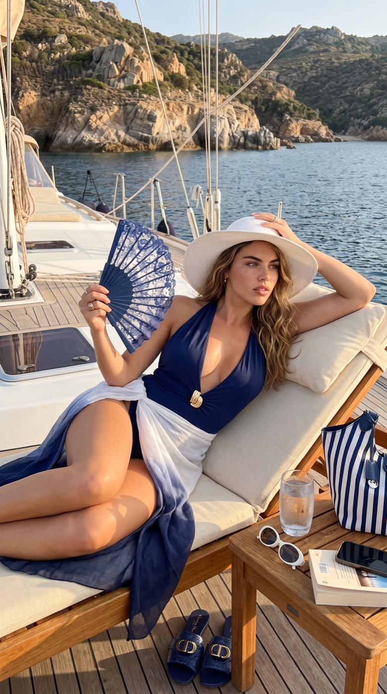
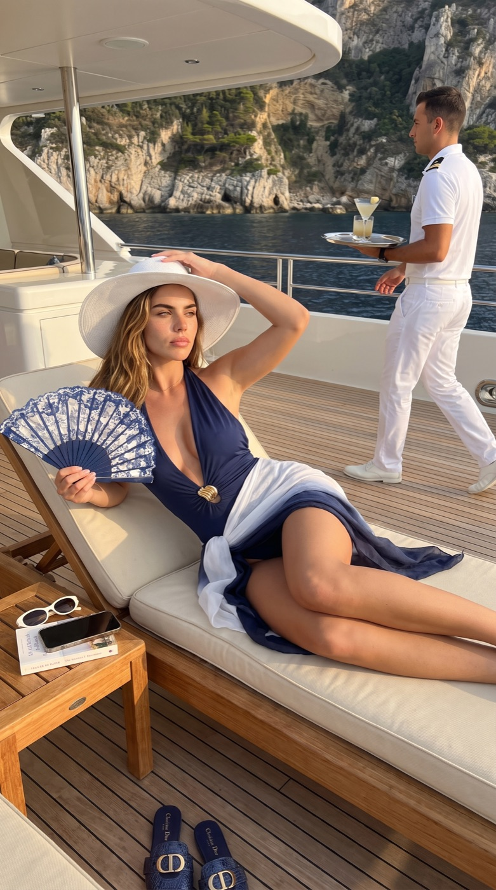
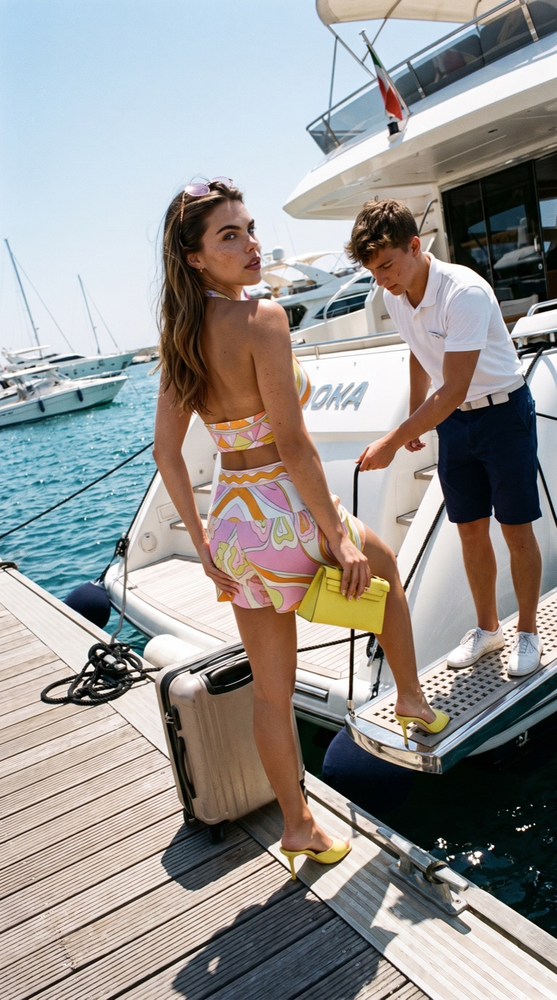
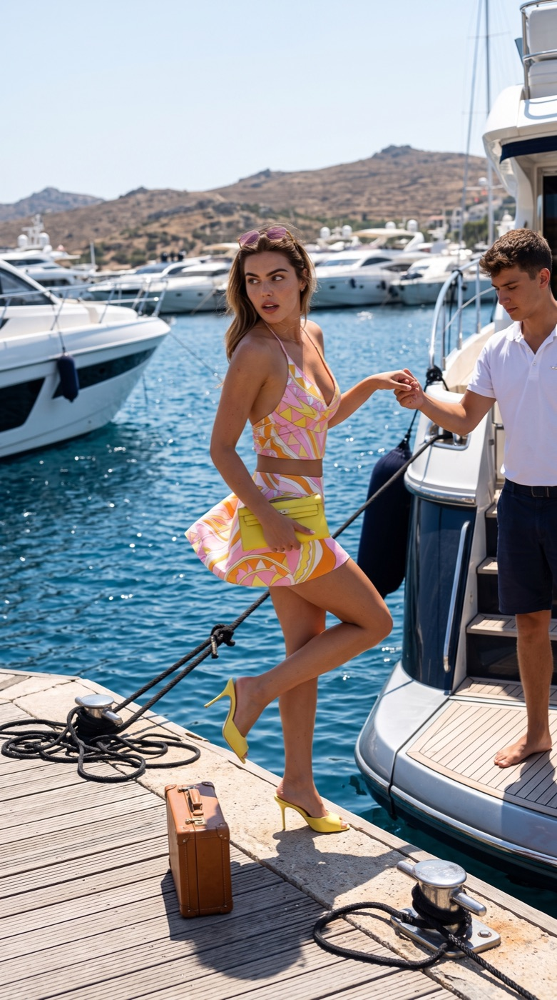

I put your actual garment on a photorealistic model and deliver a set of frames that read as ordinary studio photography — same model, same light, every angle. The piece stays the piece: cut, colour, hardware and styling are reproduced, not reinterpreted.
4–5 frames per product
One consistent model across the set
Input: mannequin, flat lay or on-model shot
Ongoing volume work
Resort set · navy maillot
Series 01 · 2 of 5 frames shown

Reclining · full styling visible · golden hour

Same set, wider frame · second subject in shot
Reproduced from the source images: plunge maillot with gold knot buckle · white-to-navy ombré sarong · blue lace fan · wide-brim straw hat · navy-and-white striped tote · navy croc-embossed Dior slides with CD hardware. One item drifted — the sunglasses came back white instead of gold.
Two-piece · all-over print
Series 02 · print-limit demonstration

Dock · looking back over the shoulder

Same set, mid-step · full silhouette
Silhouette, palette and styling hold — crop top, pleated mini, yellow clutch, yellow heeled mules, rose-tinted sunglasses. The print itself is re-drawn rather than copied: an intricate all-over pattern is the one thing generation approximates. For pieces like this I composite the real artwork onto the rendered garment as a separate pass, which is quoted as extra time.
Silk slip · lakeside
Series 03 · two focal lengths
Mid shot · fabric sheen and drape at the bodiceWide · same face, same garment, new distance
A plain, unstructured garment is the easiest case and the most revealing one: what has to survive is the drape, the sheen of the silk and the exact shade of coral across two focal lengths. Both frames come from one session, with no retouching between them.
How a product runs
You send the garment — on a mannequin, flat, or shot on someone else — plus any model, footwear and setting notes.
I build the scene and place the piece on the agreed model.
You get 4–5 frames per product in one lighting family, ready for a product page.
Needs a second pass: intricate all-over prints, and any small printed text or logo — legible-but-wrong lettering is the fastest way to lose a customer's trust, so those frames get composited or cut.
Quality control: roughly one frame in four is rejected in-house for face drift before anything reaches you.
Every image on this page is AI-generated. The people in them are not real.